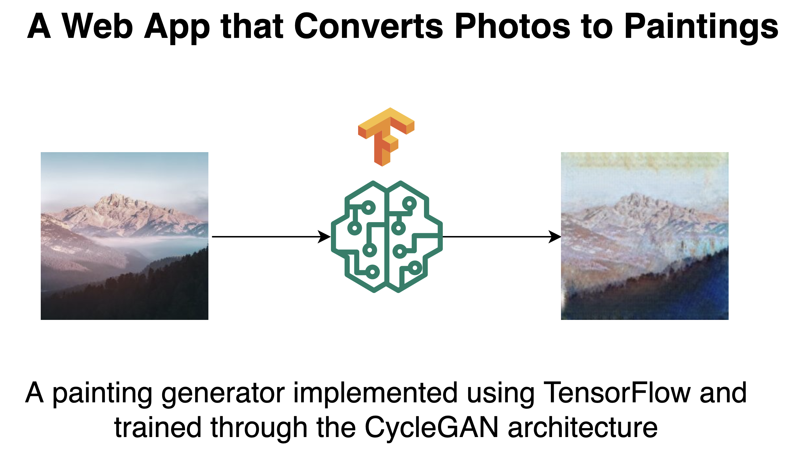

TasteMates
My side project under TasteMates Lab, an LLC I formed to bring my own app ideas to life.
Software, AI & things in between.
I’m a software developer working in New York City. Previously, I built software at Salesforce and SAP.
I like to build different things—full stack web apps, mobile apps, and machine learning models. I like to do what excites me.
B.S. Computer Science & Data Science Currently: grinding.
I recently started a new role in New York City. Outside of work, I’m building TasteMates, a side project under TasteMates Lab, the LLC I formed for it.
Before this, I spent August 2025 through May 2026 at Salesforce, building AI research agents to make sense of scattered business data.
My work at SAP also centered on AI, from agents for research and document creation to reusable tools and the distributed systems behind them.
Earlier, I worked on insurance web apps at Penn Mutual. At Temple University’s CCMM, I explored how Unity XR could make VR more accessible and work across different platforms.
My side project under TasteMates Lab, an LLC I formed to bring my own app ideas to life.

Web application that applies painting-style transfers to images using Flask and TensorFlow CycleGAN architecture. Features image classification and color histogram analysis.
Happy to connect with you.
jianwei.wayne.zheng@gmail.com ↗